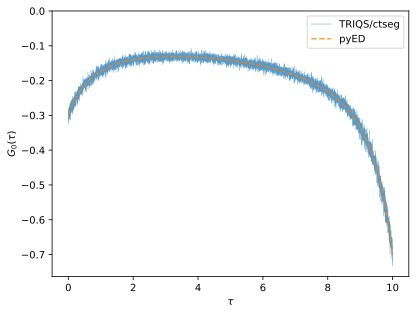
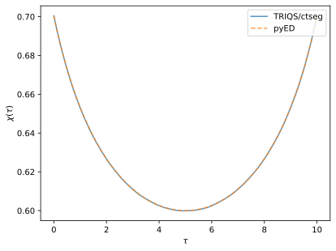

One-boson retarded interaction
To showcase the ability to treat retarded interactions in TRIQS/ctseg, we consider the minimal discrete model with one fermion (0) coupled to a fermionic bath state (1) as well as a boson
Integrating out the bath fermion and the boson gives the single fermion action
with \(H_{0} = \epsilon_0 c^\dagger_0 c_0\), retarded hybridization \(\Delta(i\nu_n) = \frac{V^2}{i\nu_n - \epsilon_1}\), and retarded interaction \(\mathcal{U}(i\omega_n) = - 2 g^2 \frac{\omega_0}{\omega_0^2 - (i\omega_n)^2} \,.\)
The fermionic Green’s function \(G_0(\tau) = - \langle \mathcal{T} c_0(\tau) c_0\rangle\) of the action \(\mathcal{S}\) can be computed numerically exactly using TRIQS/ctseg, and (since the number of states is finite) also using exact diagonalization of \(H\).
Simulating the retarded action \(\mathcal{S}\)
To compute the fermionic Green’s function \(G_0(\tau)\) with TRIQS/ctseg we
1. set up the system parameters, \(\epsilon_0\), \(\epsilon_1\), \(V\), \(g\), and \(\omega_0\),
[2]:
eps0, eps1, V, g, omega0 = -0.1, +0.1, 0.25, 1., 1.
mu = -g**2 / omega0 # For half-filling at eps0 = 0
2. construct a solver instance,
[3]:
from triqs_ctseg import Solver
S = Solver(beta=10., n_tau_bosonic=1001,
gf_struct = [["0", 1], ["1", 1]]); # CTSEG requires two flavours or more, adding one inactive fermion
Starting run with 1 MPI rank(s) at : 2026-03-11 10:21:51.593224
3. set the hybridization function \(\Delta(i\nu_n) = \frac{V^2}{i\nu_n - \epsilon_1}\),
[4]:
Delta_iw = make_gf_from_fourier(S.Delta_tau['0'])
Delta_iw << V**2 * inverse(iOmega_n - eps1)
S.Delta_tau['0'] << Fourier(Delta_iw);
4. set the retarded interaction \(\mathcal{U}(i\omega_n) = - 2g^2 \frac{\omega_0}{ \omega_0^2 - (i\omega_n)^2}\),
[5]:
D0_iw = make_gf_from_fourier(S.D0_tau['0','0'])
D0_iw << -2 * g**2 * omega0 * inverse(omega0**2 - iOmega_n*iOmega_n);
S.D0_tau["0", "0"] << Fourier(D0_iw);
5. and finally, run the solver while passing the Hamiltonian \(H_{0} = (\epsilon_0 - \mu) c^\dagger_0 c_0\).
[6]:
S.solve(h_loc0=(eps0 - mu) * n("0", 0), h_int=Operator(), # No static interaction
measure_nn_tau=True, length_cycle=16, n_warmup_cycles=int(1e6), n_cycles=int(1e7))
╔╦╗╦═╗╦╔═╗ ╔═╗ ┌─┐┌┬┐┌─┐┌─┐┌─┐
║ ╠╦╝║║═╬╗╚═╗ │ │ └─┐├┤ │ ┬
╩ ╩╚═╩╚═╝╚╚═╝ └─┘ ┴ └─┘└─┘└─┘
Block: 0 Index: 0 Color: 0
Block: 1 Index: 0 Color: 1
Interaction matrix: U =
[[0,0]
[0,0]]
Orbital energies: mu - eps = [-0.9,-0]
Renormalized interaction matrix: U =
[[0,0]
[0,0]]
Renormalized orbital energies: mu - eps = [0.100008,0]
Dynamical interactions = true, Jperp interactions = false
[Rank 0] Performing warmup phase...
[Rank 0] 10:21:51 3.77% done, ETA 00:00:02, cycle 37653 of 1000000, 3.77e+05 cycles/sec
[Rank 0] 10:21:53 82.59% done, ETA 00:00:00, cycle 825938 of 1000000, 3.89e+05 cycles/sec
[Rank 0] 10:21:54 100.00% done, ETA 00:00:00, cycle 1000000 of 1000000, 3.90e+05 cycles/sec
[Rank 0] Performing accumulation phase...
[Rank 0] 10:21:54 0.30% done, ETA 00:00:33, cycle 30026 of 10000000, 3.00e+05 cycles/sec
[Rank 0] 10:21:56 6.26% done, ETA 00:00:31, cycle 626337 of 10000000, 2.95e+05 cycles/sec
[Rank 0] 10:21:58 13.66% done, ETA 00:00:29, cycle 1366104 of 10000000, 2.93e+05 cycles/sec
[Rank 0] 10:22:02 23.04% done, ETA 00:00:26, cycle 2303792 of 10000000, 2.95e+05 cycles/sec
[Rank 0] 10:22:05 34.70% done, ETA 00:00:22, cycle 3470255 of 10000000, 2.95e+05 cycles/sec
[Rank 0] 10:22:10 49.55% done, ETA 00:00:17, cycle 4955324 of 10000000, 2.96e+05 cycles/sec
[Rank 0] 10:22:17 67.81% done, ETA 00:00:10, cycle 6780908 of 10000000, 2.96e+05 cycles/sec
[Rank 0] 10:22:24 90.58% done, ETA 00:00:03, cycle 9057730 of 10000000, 2.96e+05 cycles/sec
[Rank 0] 10:22:27 100.00% done, ETA 00:00:00, cycle 10000000 of 10000000, 2.96e+05 cycles/sec
[Rank 0] Collect results: Waiting for all MPI processes to finish accumulating...
Densities:
0: [0.700541]
1: [0.49906]
[Rank 0] Warmup duration: 2.5641 seconds [00:00:02]
[Rank 0] Simulation duration: 33.7571 seconds [00:00:33]
[Rank 0] Number of measures: 10000000
[Rank 0] Cycles (measures) / second: 2.96e+05
[Rank 0] Measurement durations (total = 7.3851):
[Rank 0] Measure <n(tau)n(0)>: Duration = 6.4573
[Rank 0] Measure Average Sign: Duration = 0.1683
[Rank 0] Measure Densities: Duration = 0.1763
[Rank 0] Measure G(tau)/F(tau): Duration = 0.4049
[Rank 0] Measure Perturbation order Delta: Duration = 0.1783
[Rank 0] Move statistics:
[Rank 0] Move insert: Proposed = 22858922, Accepted = 2849735, Rate = 0.1247
[Rank 0] Move remove: Proposed = 22852384, Accepted = 2849929, Rate = 0.1247
[Rank 0] Move double insert: Proposed = 22868112, Accepted = 0, Rate = 0.0000
[Rank 0] Move double remove: Proposed = 22857446, Accepted = 0, Rate = 0.0000
[Rank 0] Move move: Proposed = 22852998, Accepted = 1564818, Rate = 0.0685
[Rank 0] Move split: Proposed = 22858879, Accepted = 4473405, Rate = 0.1957
[Rank 0] Move regroup: Proposed = 22851259, Accepted = 4473212, Rate = 0.1958
[Rank 0] Move durations (total = 18.2591):
[Rank 0] Move insert: Duration = 3.4120
[Rank 0] Move remove: Duration = 1.9373
[Rank 0] Move double insert: Duration = 3.4507
[Rank 0] Move double remove: Duration = 0.9989
[Rank 0] Move move: Duration = 2.4168
[Rank 0] Move split: Duration = 3.8561
[Rank 0] Move regroup: Duration = 2.1873
Total number of measures: 10000000
Total cycles (measures) / second: 2.96e+05
Average sign: 1
Average perturbation order in Delta: 1.523
Single particle Green’s function
Comparing the single particle Green’s function computed with TRIQS/ctseg and pyED we find excellent agreement.
[8]:
g_tau_ed, chi_tau_ed = get_ed_ref(eps0 - mu, eps1, V, g, omega0,
S.results.G_tau["0"].mesh, S.results.nn_tau["0", "0"].mesh)
oplotr(S.results.G_tau["0"], lw=0.5, alpha=0.75, label=f'TRIQS/ctseg')
oplotr(g_tau_ed, '--', alpha=0.75, label=f'pyED')
plt.xlabel(r'$\tau$'); plt.ylabel(r'$G_0(\tau)$'); plt.ylim(top=0);

Dynamic density correlation
Also the density correlation function \(\chi(\tau) = \langle \mathcal{T} n_0(\tau) n_0 \rangle\) matches the reference solution from exact diagonalization.
[9]:
oplotr(S.results.nn_tau['0', '0'], alpha=0.75, label='TRIQS/ctseg')
oplotr(chi_tau_ed, '--', alpha=0.75, label='pyED')
plt.xlabel(r'$\tau$'); plt.ylabel(r'$\chi(\tau)$');
